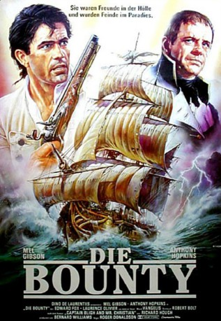

#3402 Die Bounty
Alternativ: The Bounty
 
 IMDB-Wertung: 7.1 / 10
IMDB-Wertung: 7.1 / 10  Metascore: 62
Metascore: 62 
Im Dezember 1789 sticht die "Bounty" unter Führung von Kapitän William Bligh in See. Ihr Ziel ist Tahiti, wo sie Pflanzen des Affenbrotbaums aufnehmen soll. Als der starrsinnige Bligh auf der Rückkehr ein zweites Mal die gefährliche Umsegelung von Kap Horn wagen will, zettelt der erste Offizier Fletcher Christian eine Meuterei an. Er lässt den Kapitän mit 17 Gefolgsleuten auf offener See in einem Beiboot aussetzen...
Jahr: 1984
Dauer: 102 Minuten
FSK: 16
Land: England Studio: Neue Constantin FilmTonspuren: DD2.0 - ,
Untertitel:
Auflösung: 1080p (1920x824) Größe: 5949 MB
Genre: Action, Drama, Abenteuer, Geschichte
Regisseur: Roger Donaldson
Drehbuch: Richard Hough, Robert Bolt
Soundtrack: Vangelis
Darsteller:
 Mel Gibson als Fletcher Christian Master's Mate
Mel Gibson als Fletcher Christian Master's Mate Anthony Hopkins als Lieutenant William Bligh
Anthony Hopkins als Lieutenant William Bligh Laurence Olivier als Admiral Hood
Laurence Olivier als Admiral Hood Edward Fox als Captain Greetham
Edward Fox als Captain Greetham Daniel Day-Lewis als John Fryer
Daniel Day-Lewis als John Fryer Bernard Hill als William Cole
Bernard Hill als William Cole Philip Davis als Edward Young
Philip Davis als Edward Young Liam Neeson als Seaman Charles Churchill
Liam Neeson als Seaman Charles Churchill Philip Martin Brown als Seaman John Adams
Philip Martin Brown als Seaman John Adams Simon Chandler als David Nelson
Simon Chandler als David Nelson John Sessions als John Smith
John Sessions als John Smith- Neil Morrissey als Seaman Matthew Quintal
 Dexter Fletcher als Seaman Thomas Ellison
Dexter Fletcher als Seaman Thomas Ellison- Pete Lee-Wilson als William Purcell
- Wi Kuki Kaa als King Tynah
- Tevaite Vernette als Mauatua
- Malcolm Terris als Dr. John Huggan
- Simon Adams als Thomas Heywood
- Andrew Wilde als Seaman William McKoy
 Richard Graham als John Mills
Richard Graham als John Mills- Jon Gadsby als John Norton
- Brendan Conroy als Robert Lamb
- Barry Dransfield als Michael Byrne
- Steve Fletcher als Seaman James Valentine
- Jack May als Prosecuting Captain
- Mary Kauila als Queen Tynah
- Sharon Bower als Mrs. Bligh
- Tavana als King Tynah's Councillor
Datei: X:\1984\Bounty, Die (1984, FSK16, 1920x824).mkv seit 01.04.2016
Festplatte: HD 1980-1986
 Es gibt insgesamt 46 Filme in der Gruppe '1984'
Es gibt insgesamt 46 Filme in der Gruppe '1984'